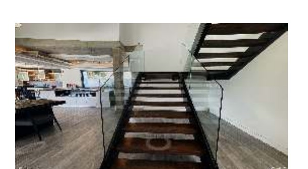

Autonomous robot navigation driven by verbal commands, combining vision, language interpretation, and path planning.

Developed deep-learning-based robot control and an autonomous navigation system driven by verbal commands, combining a vision system, a language interpretation system, and path planning.
This line of work began as Olivia Piazza's MS thesis, Natural Language Processing for Robotic Navigation Through Unknown Environments (December 2020), which framed instruction-following navigation as a trajectory optimization problem so a robot could explore unfamiliar environments from natural-language directions. The approach was later extended and presented as "Pre-contextualized Augmented Language Instructions for Autonomous Vision-and-Language Navigation" at ICDT 2025.
Unpublished student reports and materials related to this line of work.